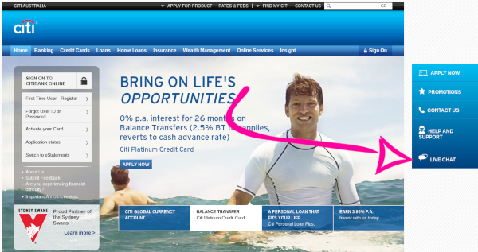

I'll just come out and say it, I like those live chat support things on websites.

I feel like I should dislike them because they are usually clunky and often show as a popup at an inconvenient time rather than just an option on the contact us page. There are stories about websites getting compromised because the 3rd party JavaScript they added to get the chat tool has been compromised.
But despite all their failings, I still like them. I think it's because when I need support on a website I don't want to send an email because I want support now I don't want to wait hours for each response.
I also don't like to pick up the phone and call. Maybe I'm unique in that but;
- Calls are ephemeral and I like to have a record of what was said.
- I can't multi-task well while I'm on the phone. I can open a chat window then go to another tab and periodically check to see if I've got a reply (or wait for it to make a noise or whatever). If I got a reply 45 seconds ago, the support person is not going to mind that it took a minute for my reply. But when I'm on hold on the phone I feel like I need to be constantly attentive because if the support person says "Thanks for holding" and I don't reply for 45 seconds they might just hang up.
- There are no issues with accent, often people have issues understanding my Australian accent and I have issues understanding their accent. I've learned the phonetic alphabet and that helps but it's still a struggle sometimes.
- I can think about my reply and re-read what they said. This is kind of a mix of the two points above but I feel it's still distinct. If someone says "Do you have xyz reference number" I can spend a minute to look for it (probably copy and paste it from wherever it is) and send it back without all that "Ummm... yes, I've got it here somewhere just let me rummage through my papers... ahh... here it is just let me read it out for you"
- I can use Google Translate. I've needed to contact an airline about a ticket and their support only spoke Spanish, it needed a bit of back and forth so chat worked better than email and I could just copy paste each of the messages into Google Translate. It wasn't perfect but it was pretty good and it got the job done.
Maybe I also like them because of the fact that as a teenager I spent several hours every night hanging out with my friends on MSN Messenger / IRC / Yahoo Chat / etc... so I'm just more comfortable with online chat.